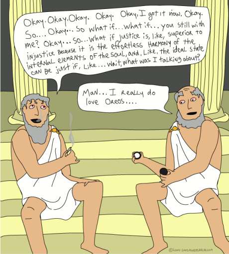

by Bertrand Russell (1946)
I've clearly been putting off this post for months, no doubt
intimidated by my assumption that my review would have to be as weighty
and well-considered as the tome itself. Screw that, a crap post is
better than no post at all.
Overall, I enjoyed it greatly. It is a triumph in illustrating the
breadth of the domain to a philosophical layman. It was as fascinating
for me for the context in which different movements have arisen, for
example the operation and mores of of ancient societies which differed
greatly from our own, such as the Spartans.
In truth, my original acquisition of the book was partly motivated by a
desire to justify my longstanding dismissal of philosophy as a
meaningful discipline, and this narrow minded and self-fulfilling
expectation was indeed confirmed to some extent.
The opening portion of the book, about ancient philosophy, made it all
too easy to infer that the gems of ancient philosophy are very much rare
pinnacles of achievement, set amidst a babble of incoherent theories and
proclamations. The valuable ideas must be carefully searched out,
extracted and refined, much as one might pan for gold on expansive
shores of mud. However, this gratifying exercise in belittlement also
brought with it an increment of my understanding as to why I feel this
way.

It may be all very well for me to sit here nitpicking from atop the
cumulative results of thousands of years of hindsight, but my shrill,
gauche layman objections seem to be rarely well presented, and even less
often indulged with a sensible rebuttal, so I'm glad that I read the
book and gained some context in which to articulate them.
The raising of the intellect above the concerns of mere empiricism, as
typified by the schools of Descartes and Plato, seems to be completely
undermined by the apparently overlooked fact that there is no objective
way of apprising the workings of 'pure reason.' The human mind, of
course, is not capable of 'pure reason', if there even is such a thing,
and is equally incapable of recognising its presence or absence in any
given supposition. As a result, all exercises in deduction are extremely
fallible, and this should come as no surprise to anyone who has ever
forgotten or misjudged something. Just because the mind is not well
understood, that does not make its machinations any less empirical than
the evidence of the senses - what seems to us like logic is entirely
subject to the vagueries of our implementation, regardless of whether or
not our mind's implementation is embodied in our apparent physical
brains or not.
To elevate the conclusions reached by this process above the concerns of
mere empiricism is to put them beyond the reach of any form of feedback
or discernment, a state of affairs which leads to entirely nonsensical
stances standing uncontested for hundreds of years.
Because of this, I would argue that the teachings of thinkers such as
Plato have in fact hindered the development of modern thought, not
just by by blazing trails down several blind alleys, but more
critically, by then systematically putting their own conclusions beyond
the reach of criticism and refinement, effectively removing the
intellectual tools that might have enabled pupils to retrace their
steps, and map out the geography of thought more thoroughly.
The second portion of the book is the weakest, dealing with the only
form of educated rumination occurring during the middle ages, which was
religious in nature. It is perhaps unsurprising that a period such as
this is notable for it's lack of original thought, barring individuals
every few centuries such as Aquinas. As a result, large parts of this
section degenerate into a litany of power struggles, assassinations and
coronations, notable only for their tedium.
The final portion deals with modern philosophers, which regains the
interest of the early sections, by virtue of describing the works of
less religiously restricted protagonists, nurtured by the widening
availability of education and communication, resulting in a glorious,
chaotic competition of ideas. It was only during this section that I
feel I gained an appreciation for the process itself, as opposed to the
teachings of individual practitioners.
We, as humans, are rubbish at the act of thinking - we leap to
conclusions, exhibit enormous biases, forget things, overlook things,
make faulty correlations, are inconsistent, are influenced by personal
gain and traumatic past experience, and worst of all: we are incapable
of seeing these weaknesses - completely blind to our own incompetence.
The means by which we evaluate our own conclusions are tied inextricably
to the mechanism which derived them in the first place - we always think
we are right.
Given this, it is no surprise that we can never agree on anything. We
can never see each other's point of view. Whether tackling the problems
of day-to-day life, or pondering the riddles of existence, a million
different people will jump in a million different directions, no two
quite the same. Most of those ideas turn out to be worthless. Idiocy
that is detrimental or ineffectual. Only a few of them stick - and there
is no way of knowing the merit or otherwise of any idea unless you have
some criteria to judge them by. In day-to-day living, some ideas will
allow the individual or group to prosper and be happy. In fields where
objective measurement is possible - the sciences - then cumulative
progress can be made, as successful ideas are shared and built upon.
However, outside of these domains, we may be captivated and entranced by
the enthralling pictures philosophy presents to us, and our lives may be
enriched as a result. But without any means of discerning the good ideas
from the bad, we are are forever doomed to explore a multitude of
alternative, competing, overlapping intellectual explorations, without
any knowledge of which ones are meaningful, and which ones are purely
fanciful. It may be great fun, but it's masturbation.
Rating: 8/10: The box with which to call me philistine is below:


 gameloop2.py.zip
gameloop2.py.zip


{kind=link}
{kind=link}
{kind=link}
{kind=link}